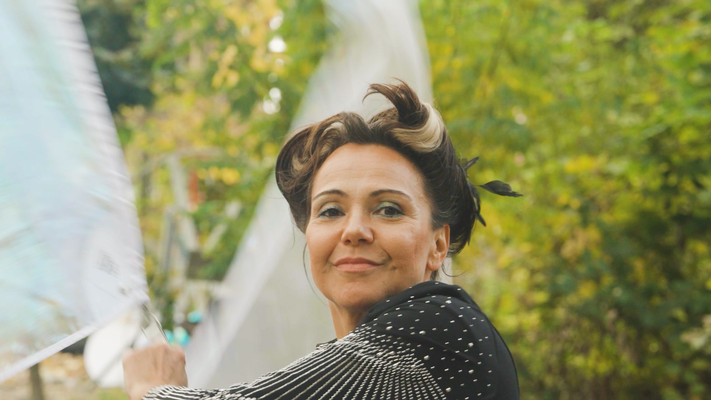
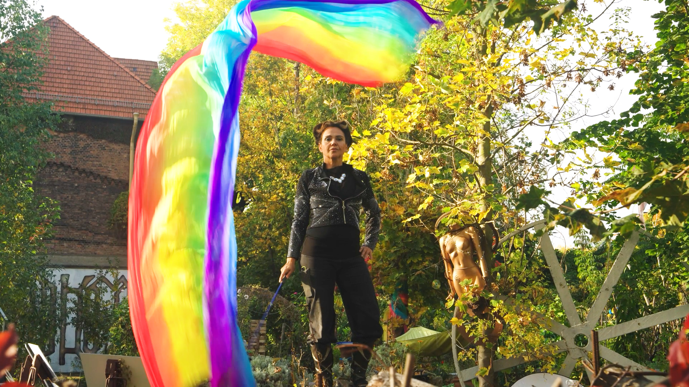
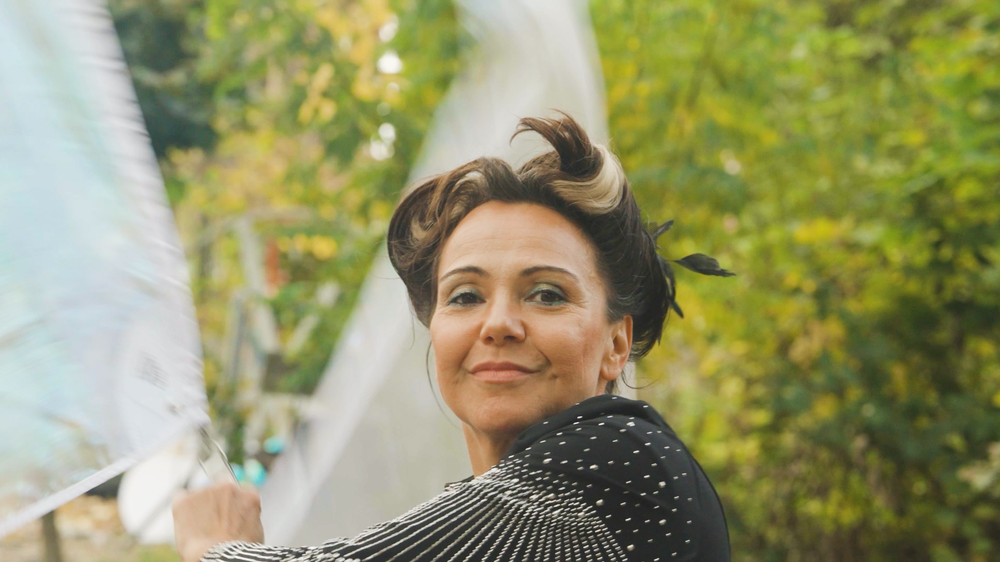
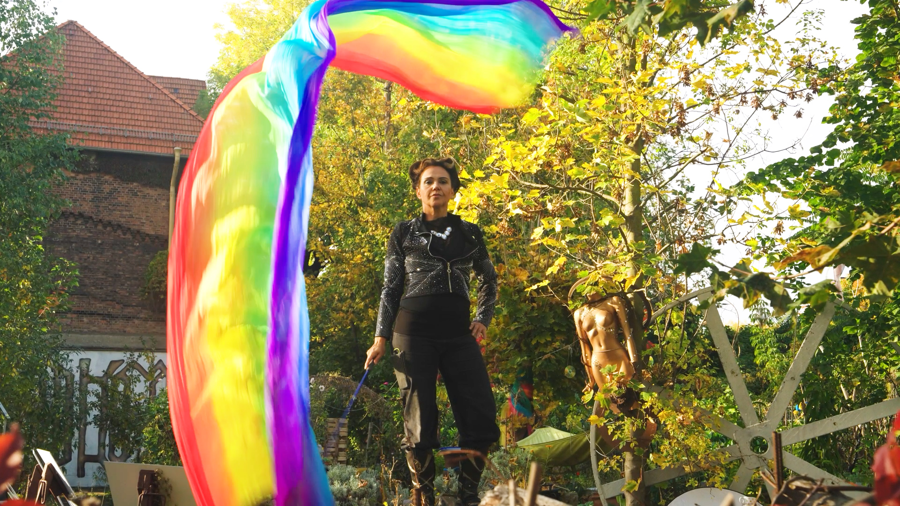

Kunst ohne Heimat
Portraitfilm, 10 Minuten
Mit Lukas Hohmeister, Carolina Resta, Harun Kahmaran, Fausto Pellegrini
Co-Regie, Konzeption, Postproduction
2024 entstand im Rahmen meines Multimedia Production Studiums ein 10-minütiger Portraitfilm.
Die BLO Ateliers, Berlins grösster Artist Space, bestehen aus über 90 Kunstschaffenden in verschiedensten Disziplinen.
Die 64 Ateliers befinden sich alle auf einem stillgelegten Bahngelände.
Völlig aus dem Nichts hatte die Deutsche Bahn den BLO-Mitgliedern 2024 den Mietvertrag gekündigt,
was viele von ihnen nicht nur der Möglichkeit beraubte, ihre Kunst zu schaffen,
sondern auch ihrer Existenzgrundlage.
Wir durften die Kunstschaffenden für eine Woche begleiten und in ihren Bemühungen um die Rettung der BLO Ateliers portraitieren.
Der Film entstand gemeinsam mit vier Mitstudierenden im «Modul Audiovisuelles Erzählen».
Meine Aufgabenbereiche lagen hauptsächlich in der Konzeption, Kommunikation und Organisation,
Co-Regie mit Carolina Resta, Interviewführung und in der Postproduction.
 


